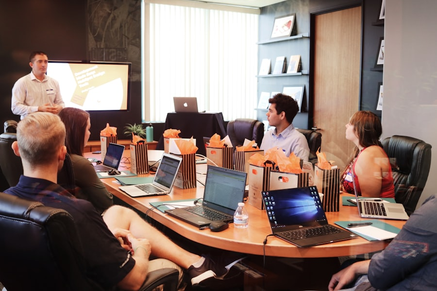

Most teams automate single tasks. The larger gain is removing the handoffs between them, where time and accuracy quietly leak.
A four-week pilot moved approvals, matching, and exceptions onto agents that run beside the existing ERP.

A practical sequence for choosing the first workflow to automate before the platform decisions pile up.